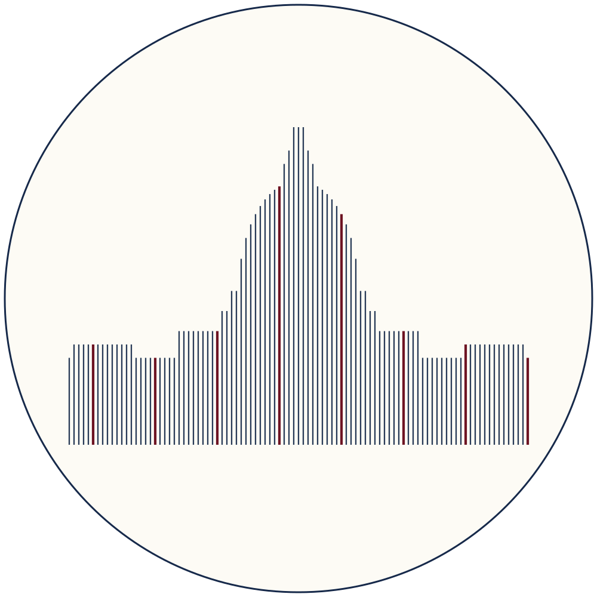
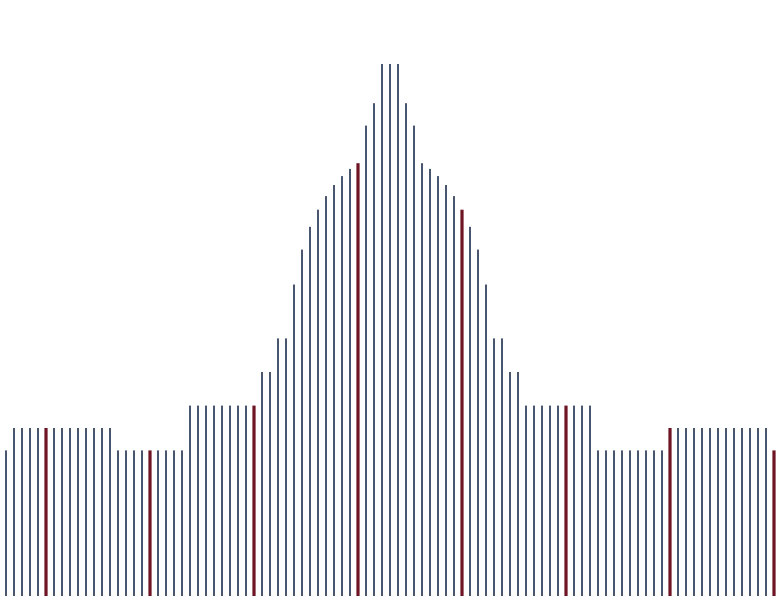

Longitude DC Intensive
Brand kit · for posts, slides, and anything carrying the program's look
Colors
#16294a · text, lines, buttons#0f1e3a · dark bands, footer#fdfbf5 · main background#f4efe2 · alternate background#f4efe1 · text and lines on navy#6e1423 · accent on light backgrounds#a4161a · accent on navy backgrounds- Secondary text is navy ink at 72% opacity:
rgba(22, 41, 74, 0.72). - Hairlines and borders are navy ink at 18% opacity:
rgba(22, 41, 74, 0.18). - Red is an accent, never a surface: one or two red elements per design, small.
- Wine red on light grounds, bright red on navy; never both in one design.
Typography
Playfair (the variable family with optical sizing, not "Playfair Display") is the only typeface, for headlines and body alike. Free on Google Fonts; fallback Georgia. On LinkedIn images, set headlines in Playfair 600 to 700 and keep body text at 400 to 500.
A fully funded two-week program for people in AI safety who are curious about policy and want to know, not guess, whether it is where they should go next.
Logo

assets/longitude-capitol-badge.svg
assets/longitude-capitol.svg- Never recolor the logos; the red lines stay red.
- Give the badge clear space of at least a quarter of its diameter.
- On navy, use the badge (it carries its own light disc), not the bare Capitol.
The line motif
Fine, evenly spaced vertical lines are the brand's signature: lines of longitude. A few of them, roughly one in thirteen, are red and slightly thicker, the red lines AI development should not cross. Rules of thumb:
- Navy lines on light grounds, cream lines on navy grounds.
- Line thickness ratio about 1 : 2 (regular : red), spacing 4 to 6 times the line width.
- Use the motif as an edge or band (top, bottom, or side of a design), not as a full-page texture.
Quick recipe for a LinkedIn post
| Element | Spec |
|---|---|
| Background | Warm white #fdfbf5 (or deep navy #0f1e3a for a dark card) |
| Headline | Playfair 700, navy ink (cream on navy) |
| Kicker or date line | Uppercase, letterspaced, wine red (bright red on navy) |
| Body | Playfair 400 to 500, ink at 72% |
| Accent | One line-motif band or the badge in a corner, not both large |
| Button look | Navy rectangle, cream text, 3px corner radius |
Tone in one line: direct and warm, second person, concrete numbers before adjectives, no hype words.